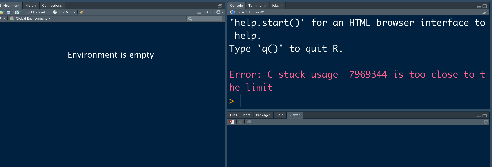

I faced the following issue recently while working with R via Rstudio on macOS Mojave (version10.14.6).

Inorder to solve the error, I deleted the .Rprofile. The following commands open the .Rprofileand you can deleteevery
file.edit(file.path("~", ".Rprofile"))
file.edit(".Rprofile")